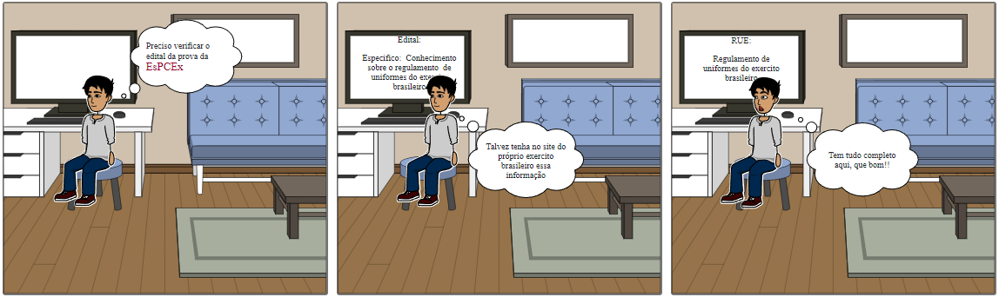
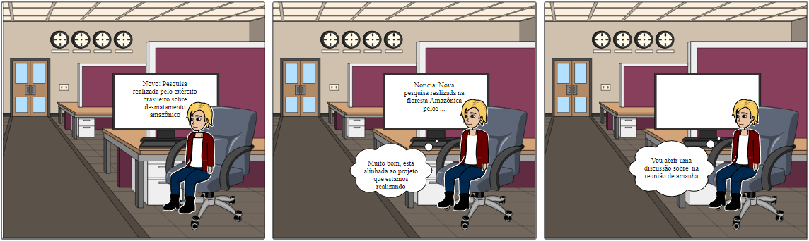

Storyboard
1. Introdução
O storyboard e um tipo de prototipo de baixa fielidade, onde é uma representação visual de uma história através de quadros estáticos, compostos por desenhos, colagens, fotografias ou qualquer outra técnica disponível, que vão representar como um usuário vai poder progredir em uma tarefa,
1.1 Beneficios do storyboard
- Foco holístico: ajuda a enfatizar como uma interface realiza uma tarefa.
- Evita o compromisso com uma interface de usuário especifica (ainda sem botões).
- Ajuda a colocar todos os stakeholders na mesma pagina em termos do objetivo.
1.2 Os storyboards devem transmitir:
- Preparo
- Pessoas envolvidas
- Ambiente
- Tarefa sendo realizada
- Sequência
- Quais etapas estão envolvidas?
- O que leva alguém usar o app?
- Que tarefa está sendo ilustrada?
- Satisfação
- O que motiva as pessoas usarem este sistema?
- O que permite que as pessoas realizem?
- Que necessidade o sistema atende?
2.1. Storyboard: Acessar o regulamento de uniformes do exército

regulamento de uniformes do exército
| Atividade | Tarefa | Definição |
|---|---|---|
| Preparo | Pessoas envolvidas | Gustavo Veras |
| Ambiente | Própria casa | |
| Tarefa a ser realizada | Encontrar o regulamento de uniformes do exército | |
| Sequência | etapas envolvidas para realizar a tarefa | 1. Acessar o site 2. Acessar "Publicações" 3. Acessar "RUE" 4. Acessar "Ler a Publicação" |
| O que faz a pessoa usar a aplicação | Estudar para a prova da EsPCEx | |
| Que tarefa está sendo ilustrada | Gustavo verifica o edital da prova e vê que como conteudo está o conhecimento do regulamento de uniformes do exército, fazendo assim que o Gustavo busque no site do exército brasileiro | |
| Satisfação | O que motiva a pessoas usar esta aplicação | Acessar de maneira facil e atualizada os conteudos relacionados ao exército brasileiro |
| A aplicação permite que a pessoa realize | Permite que a busca seja de forma online pelo proprio site alem da visualização de regulamentos semelhantes | |
| Que necessidade o sistema atende | Atende a necessidade de realizar pesquisas em locais diferente pois ja estão reunidos no mesmo site |
2.2. Storyboard: Acessar pesquisa do exército brasileiro relacionada a amazônia

| Atividade | Tarefa | Definição |
|---|---|---|
| Preparo | Pessoas envolvidas | Fernanda Fagulha |
| Ambiente | Local de trabalho | |
| Tarefa a ser realizada | Acessar pesquisa do exército brasileiro relacionada a amazônia | |
| Sequência | etapas envolvidas para realizar a tarefa | 1. Acessar o site 2. Acessar "Meio Ambiente" |
| O que faz a pessoa usar a aplicação | Verificar notícias recentes relacionadas ao meio ambiente e energia renovável relacionadas ao exército brasileiro | |
| Que tarefa está sendo ilustrada | É lançada uma nova pesquisa pelo exército brasileiro sobre desmatamento amazônico e ela precisa de mais informações para abrir uma discursão com a equipe de trabalho que estão relacionados a uma ONG de preservação amazônica | |
| Satisfação | O que motiva a pessoas usar esta aplicação | Acessar de primeira mão e de forma confiável a materia sobre a pesquisa |
| A aplicação permite que a pessoa realize | Permite a busca de forma online e acessivel a noticias | |
| Que necessidade o sistema atende | Notécias do meio ambiente relacionadas ao exército brasileiro |
3 Planejamento de Avaliação
A avaliação de IHC é uma etapa fundamental em qualquer processo de desenvolvimento que busque produzir um sistema iterativo com alta qualidade de uso. Com a avaliação, o avaliador tem uma orientação de como fazer um julgamento de valor sobre a qualidade de uso da solução de IHC e a identificar erros na interface e na interação que possam prejudicar a experiência individual do usuário durante o uso do sistema. Assim, tem-se a possibilidade de corrigir problemas relacionados com a qualidade de uso antes de colocar o sistema no cotidiano dos usuários, seja uma atualização de um sistema existente ou um novo sistema. Para o Planejamento da avaliação dos storyboards, foi decidido a utilização do método de avaliação por investigação por questionário.
3.1 Objetivo
Verificar se os storyboards criados e suas respectivas situações fazem sentido ou se estão de acordo com a realidade. Perguntas a serem respondidas: • Os quadros condizem com uma situação real? • As ações dos atores fazem sentido? • Os motivos dos atores são legítimos? • As tarefas realizadas pelos atores estão claras? • Os objetivos dos atores ficaram claras?
3.2 Questões práticas e éticas
**Questões Práticas** O formulário de perguntas será enviado para aqueles que já acessaram o site do Exército Brasileiro. **Questões Éticas** Antes de iniciar o questionário, os avaliados receberão uma mensagem de orientação com o Termo de Condição e uma checkbox escrito “Sim, aceito as condições”. Não será pedido algum dado que possa identificar os avaliados.
4 Planejamento do relato dos resultados e Teste Piloto
Para o relato dos resultados, vai ser realizado um relatório consolidando os seguintes tópicos: • Os objetivos e escopo da avaliação; • A forma como a avaliação foi realizada (método de avaliação empregado); • O número de participantes que realizaram o questionário; • Um sumário dos dados coletados e gráficos gerenciais; **Teste Piloto** O teste piloto vai ser realizado de forma que os artefatos da avaliação fossem revistos antes de iniciar a avaliação.
Referências bibliográficas
BARBOSA, Simone; SILVA, INTERAÇÃO HUMANO-COMPUTADOR. Local de publicação: Elsevier Editora Ltda, 2010.
VIANNA, Maurício et al., Design Thinking. Local de publicação: MJV Press, 2011.
Storyboards, Paper Prototypes and Mockups - Scott Klemmer / Univ. Califórnia em Berkeley (Coursera), 2020. 1 vídeo (5:53 min). Disponível em: Link. Acesso em: 15 março 2022.
| Versão | Data | Descrição | Autor | Revisor |
|---|---|---|---|---|
| 0.1 | 15/03/2022 | Adicionando storyboard | Heitor Marques | |
| 0.2 | 15/03/2022 | Adicionando imagens storyboard 1 e 2 | Heitor Marques | |
| 0.3 | 16/03/2022 | Adicionando Planejamento de avaliação e planejamento de relato do storyboard | Levi Queiroz |